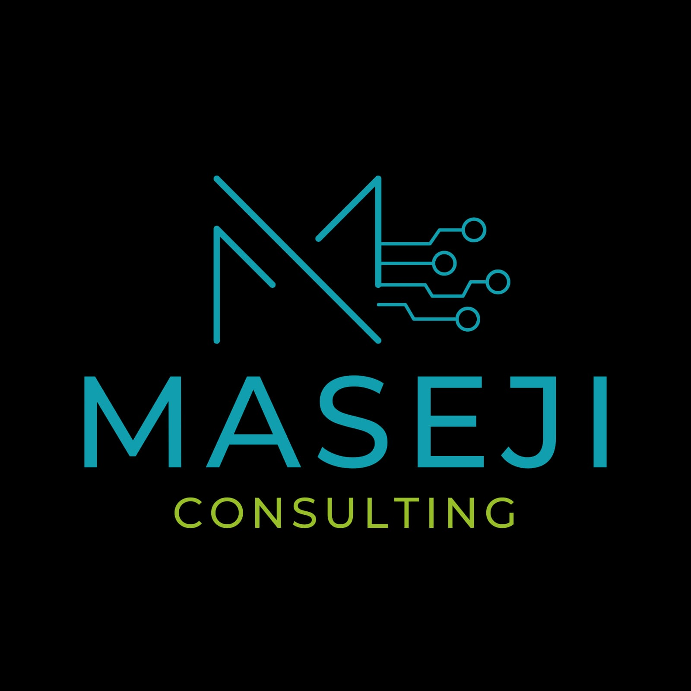

IT Requirements Consulting
We help departments capture needs, compare options, and prepare practical specifications for computers, printers, networks, and workplace technology.

IT procurement, equipment, and support services
A professional consulting partner helping public-sector teams define requirements, source dependable equipment, and keep essential office technology working.
What we do
We support organisations that need clear advice, accountable supply, and hands-on technical service for daily business systems.
We help departments capture needs, compare options, and prepare practical specifications for computers, printers, networks, and workplace technology.
Desktop and laptop sourcing, configuration, software readiness, user handover, and basic support for productive workstations.
Printer supply, installation, maintenance coordination, consumable planning, and support for office printing environments.
Responsive assistance for troubleshooting, equipment checks, replacement planning, and small office technology improvements.
Government services
Maseji Consulting works with the discipline expected by government and public-sector clients: clear requirements, traceable proposals, service consistency, and professional communication throughout the engagement.
Company profile
We bring consulting discipline to practical technology work. Our focus is simple: understand the requirement, recommend the right solution, and support clients with professional follow-through.
Start a conversation
Share your equipment requirement, service concern, or procurement scope and we will respond with a practical next step.